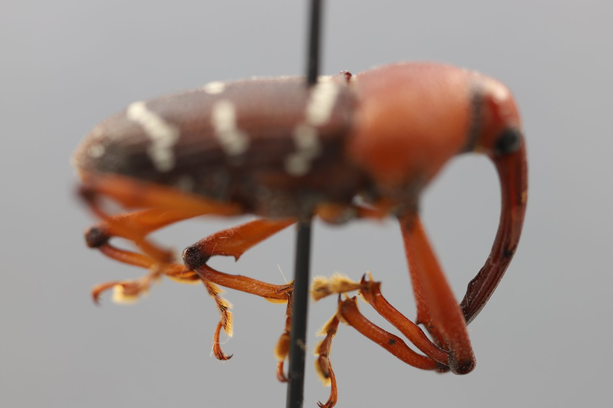
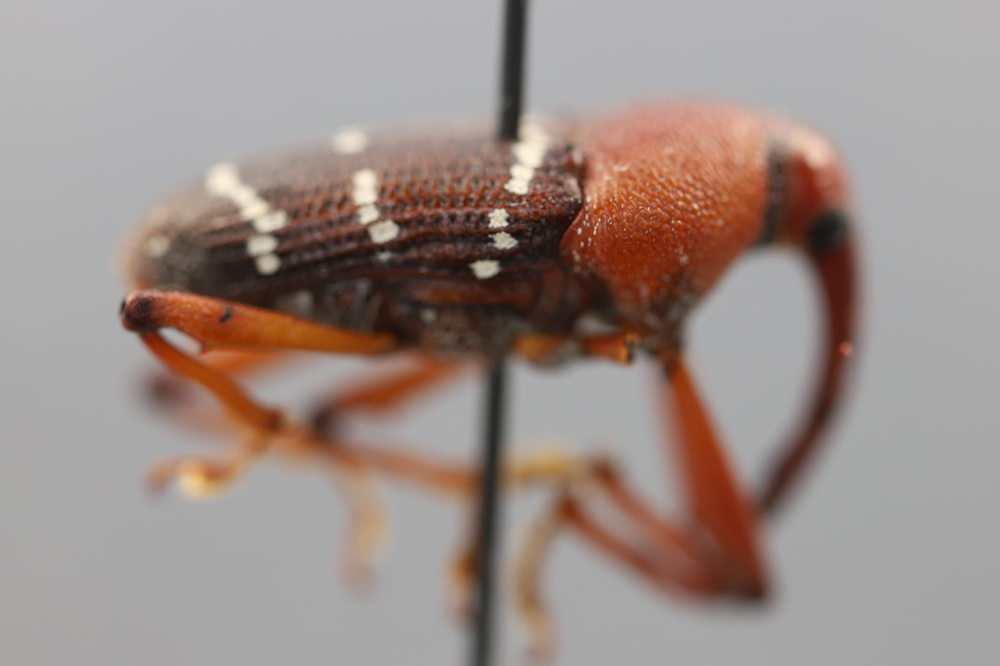
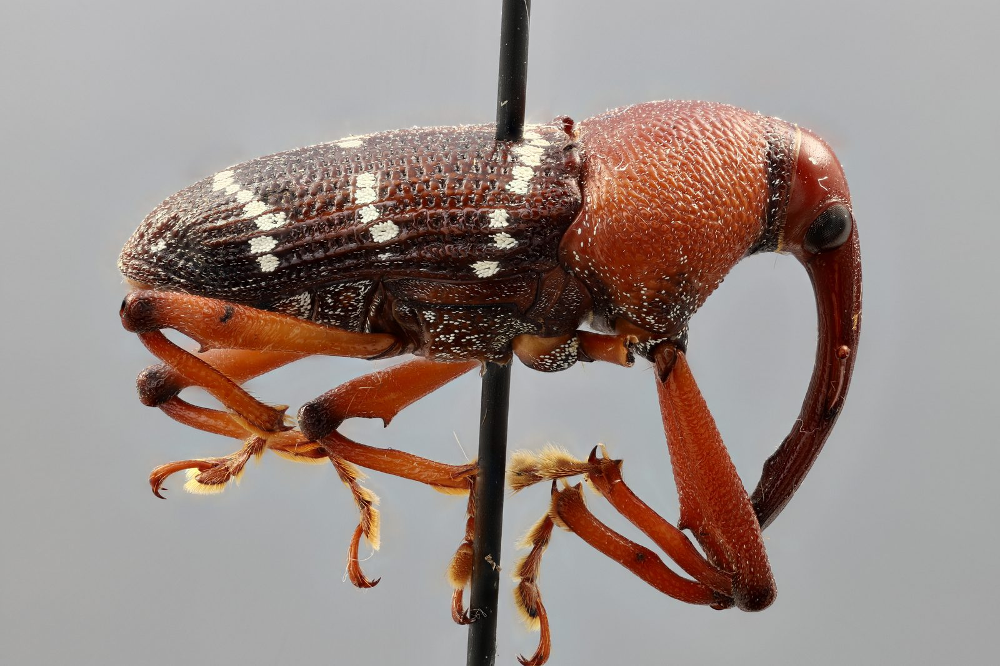
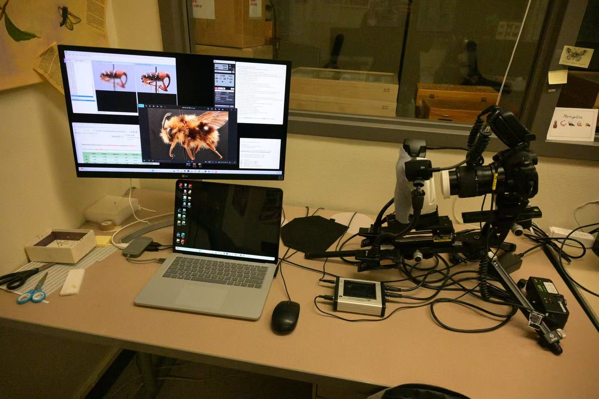

Which measurements are worth keeping?
UIBS selects a fixed number of frames from focal stacks and repeated exposures with one shared greedy procedure, and audits when that selection helps and when it doesn’t.
UIBS →Physics undergraduate · EECS minor · UC Berkeley
Computational imaging that can show its work.
I work on computational microscopy and multi-frame reconstruction. I want to design optical measurements and reconstruction algorithms together, and to test what a reconstruction recovers.
I’m applying to PhD programs in computational imaging and optics.



Computed from every slice of the stack with the method and settings of my FocusStack2XR paper: a smoothed Laplacian focus response picks the sharpest slice at each point, the margin over the runner-up gives a confidence, and a 90th-percentile threshold gives a conservative validity mask. PMax blends slices, so the map shows which slice best supports a region, not what PMax used. This specimen has only four slices, rescaled to match the composite and analyzed the same way; with so few slices, confidence and agreement run much higher than in a full stack. Treat the map, and the 2.5D view built from it, as a cue, not as measured depth.
Research
My interest started with insect specimens at the Essig Museum. With limited depth of field, every specimen needed a stack of photos at different focus settings, and the fused all-in-focus image made me ask which measurements supported each detail it showed. I now work on three versions of that question.
A camera or microscope doesn’t record a scene directly. Optics shape the light, a sensor counts it, and software turns those counts into the picture you see. Computational imaging designs the optics and the software together.
Measuring a filter from RAW data ↓A lens is sharp at only one distance, and close up that zone can be under a millimetre deep. A focal stack is a series of shots at different focus settings; software fuses the sharpest parts into one all-in-focus image.
The focal stack at the top ↑Even a good lens spreads a point of light into a small pattern, its point-spread function. Imperfections called aberrations, such as defocus, astigmatism and coma, change that pattern. They are usually written as a sum of standard shapes called Zernike modes.
My microscopy work ↓Every frame carries random noise. In the ideal case, averaging N frames improves the signal-to-noise ratio by √N: four frames double it and a hundred give ten times. Real data can fall short of that, which is worth checking.
UIBS and temporal stacks ↓Each frame costs time, storage and light. In fluorescence microscopy, light also bleaches the sample and can harm living tissue. So choosing which measurements to take, or which to keep, matters as much as how they are processed.
My PhD direction ↓Reconstruction works backwards from measurements to the scene and the optics. Sometimes different answers explain the same data equally well, so a result can fit and still be wrong. A good experiment is designed so the data can tell them apart.
See one in the playground ↓UIBS selects a fixed number of frames from focal stacks and repeated exposures with one shared greedy procedure, and audits when that selection helps and when it doesn’t.
UIBS →In the Na Ji Lab I work with the lab’s neural-field reconstruction pipeline, which estimates a specimen and the microscope’s aberrations together. Investigating a late-stage drift in its aberration estimates led me to ask when a good image fit pins down the optics.
Computational microscopy →FocusStack2XR estimates which focal slice is sharpest in each region of an all-in-focus composite, how decisive that estimate is, and whether the evidence is strong enough to trust, so the basis of a fused image stays visible.
FocusStack2XR →For my PhD
I want to study how optical design and measurement selection can make reconstructions more reliable. Two directions follow from my current experiments: finding measurements that help distinguish optical aberrations from specimen structure, and using what complete image stacks reveal to guide acquisition when exposure or time is limited. I’d like to test both with forward simulations and controlled experiments, judging methods by image quality and by recovery of known physical parameters.
Publications
UIBS: a unified formulation for retrospective subset selection in spatial and temporal image stacking
Bingxi Li
FocusStack2XR: Provenance-Preserving Depth-Aware Visualization of Focal-Stacked Specimen Images
Bingxi Li
Experimental Study of Transmission and Color Shift in Neutral Density (ND) Filters
Bingxi Li
Projects
In plain wordsIf you can keep only 8 frames from a stack of dozens, which 8 should they be, and how much do you lose? UIBS answers that for focus stacks and for repeated exposures, and checks the answer against simple baselines.
Focal stacks and repeated-exposure sequences both combine many frames into one image, but for different reasons: focus stacks need frames that cover different depths, while temporal stacks need frames whose noise averages out. UIBS (unified information-budgeted selection) picks a fixed number of frames from a stack that has already been acquired, using one greedy objective with domain-specific proxies: a focus-response score for focal stacks and a shrinkage-regularized residual-covariance proxy for repeated exposures.
I evaluated it on seven insect focal stacks (519 images; some are different views of the same specimen) and three 64-frame Nikon Z8 RAW runs with matched dark frames and a separate low-noise reference, against random, uniform and single-operator greedy baselines. The baselines carry the main finding. Most of the spatial gain comes from greedy selection itself; my dual-operator score showed no consistent advantage over selecting with a single focus measure, and it can lower retention in the worst-served regions. Retention is scored with the same focus responses the selectors use, so it measures how much focus evidence survives, not the quality of a re-fused image.
Data from the UIBS manuscript (SPIE Sensors + Imaging 2026, proceedings under review). Medians hide the lower tail: on some stacks UIBS lowered 10th-percentile retention. Temporal selection showed no consistent advantage over random or uniform subsets.
In plain wordsA fused photo looks sharp everywhere but hides which original shot each part came from. This tool recovers that, and says how sure it is.
An all-in-focus composite is good documentation but it erases provenance: you can no longer tell which slice supports a region, or whether that assignment is ambiguous. FocusStack2XR keeps that evidence. It computes a focus-index map, a confidence margin, a conservative validity mask and a relative focus-depth layer, and a browser viewer lets you switch overlays, browse slices and click a region to see its predicted source slice. Relative depth is treated as an inspection cue, not calibrated 3D geometry.
The “XR” is the goal, not the current system: the prototype is a desktop browser viewer and hasn’t been tried in a headset or with users. The paper’s argument is that a plausible 2.5D view can imply geometry the data don’t support, so the evidence layers have to come first.
The viewer at the top of this page shows maps computed with this method from every slice of each stack. The paper evaluates seven stacks across four specimen categories and reports where the method breaks: transparent wings and cluttered scenes.
In plain wordsThe software learns two things at once from the same images: what the sample looks like and how the microscope blurs it. I test whether the blur it learns is the real one.
I apply and analyze the lab’s neural-field-based reconstruction pipeline for two-photon fluorescence microscopy. A learned representation of the specimen is combined with a physical forward model of the microscope, so one optimization estimates both the specimen and the system’s aberrations, written as Zernike modes, and its point-spread function.
One problem caught my attention: a late-stage drift in the estimated optical parameters, which continued after the reconstruction loss had largely settled. I ran controlled tests of learning rates, regularization, shear handling and SLM/pupil geometry, comparing recovered Zernike coefficients with simulation references. Optimizer dynamics, model mismatch or a direction the data don’t constrain could each produce such a drift, and telling them apart is still open. I also extend an existing Gaussian-mixture-based SNR analysis across excitation powers and frame-averaging levels, testing how segmentation and masking choices change the result.
In plain wordsInsects are deeper than a macro lens can keep sharp, so each specimen is photographed dozens to over a hundred times at different focus, and the sharp parts are merged.
I acquire high-resolution focal stacks of pinned insect specimens with controlled illumination and motorized focus stepping, and fuse them into all-in-focus composites with Zerene Stacker PMax. Stacks run from 24 to 127 slices.
Inspecting fine structures and fusion artifacts in those composites made me want to know which measurements supported each displayed detail. I organize the source images for reproducible focal-stack analysis, and this work led directly to my selection experiments (UIBS) and to a tool that shows which source slice most likely supports each detail of a fused image (FocusStack2XR).

In plain wordsA dark camera filter should dim light evenly, by half per stop. I measured one: it dims less than its markings say and tints colors warmer as it darkens.
My first independent measurement project. I built a RAW-domain workflow to test a variable neutral-density filter against the ideal stop law: Nikon Z8 14-bit RAW captures converted to linear TIFFs, a homography-rectified ColorChecker, two illuminants (about 3000 K and 6000 K) and stops ND0 to ND5 with three repeats each. Transmission fell more slowly than the ideal 2−n (fitted log2 slope −0.74 against an ideal −1), and colors drifted warmer with density (R/G up, B/G down), which I quantified with RGB channel ratios and CIE Lab ΔE*ab.
It taught me to keep a pipeline linear until the last step.
Optics
A short tour of the optics behind imaging, in five parts. Each part describes light in a different way and comes with a small simulation that runs in your browser.
When everything in an optical system is much larger than the wavelength, light can be treated as rays: straight lines that bend where they pass from one material into another, following Snell’s law. A lens is shaped so that the rays leaving one object point meet again at one image point. How far behind the lens they meet depends on the focal length f and on how far away the object is.
Put the sensor anywhere else and each point spreads into a small disk, the blur circle. Its size scales with the aperture diameter D, so a smaller aperture, a larger f-number, deepens the zone that looks sharp. Close up, that zone gets very thin: at life size and f/8 it is about a millimetre deep, which is why insect specimens are photographed as focal stacks.
Where it meets my workDepth of field is why the Essig specimens on this site were photographed as focal stacks, and why the viewer at the top asks which slice is sharpest where.
Further reading: E. Hecht, Optics, 5th ed. (Pearson, 2017).
Light is an electromagnetic wave; visible wavelengths run from about 400 to 700 nm. By Huygens’ principle, every point on a wavefront acts as a source of new wavelets. Behind two narrow slits the wavelets from each slit overlap: where they arrive in step they add, and where they arrive half a wavelength apart they cancel. Thomas Young’s interference experiments in the early 1800s used fringes like these as evidence that light is a wave.
The same spreading limits every lens. Even a perfect lens images a point as a small Airy pattern, and two points closer than about 0.61 λ/NA (the Rayleigh criterion) blur together until they are hard to tell apart, where NA is the lens’s numerical aperture. Better glass cannot remove this limit. Shorter wavelengths and wider apertures shrink it, and super-resolution microscopy gets around it by changing what is measured.
Where it meets my workThe point-spread function in my aberration playground is this calculation for a circular lens: an Airy pattern, distorted by aberrations.
Further reading: M. Born and E. Wolf, Principles of Optics, 7th ed. (Cambridge University Press, 1999).
Any image can be built from sinusoidal stripes of different spacings and directions, its spatial frequencies. In coherent light, a lens forms in its back focal plane the Fourier transform of the field in its front focal plane: coarse features land near the axis and fine detail farther out. A second lens transforms back. This arrangement, the 4f system, lets you edit an image by blocking or phase-shifting parts of its spectrum.
Ernst Abbe explained microscope resolution this way in 1873: to image a fine grating, the objective must collect at least one of the grating’s diffracted orders as well as the undiffracted light. Frits Zernike’s phase contrast, recognized with the 1953 Nobel Prize in Physics, shifts the phase of the undiffracted light by a quarter wave so that transparent cells become visible.
Where it meets my workThe focus measures in FocusStack2XR are high-pass filters: a slice scores high where its fine detail survives. The aberration playground computes each point-spread function as the Fourier transform of the lens pupil.
Further reading: J. W. Goodman, Introduction to Fourier Optics, 4th ed. (W. H. Freeman, 2017).
A conventional camera tries to form the finished picture on the sensor. Computational imaging treats the sensor data as a measurement to be decoded, and designs the optics so that the decoding works well, even if the raw image looks worse.
Defocus is a simple example. A defocused photo is the sharp scene blurred by the shape of the aperture. The blur from a round aperture all but erases some spatial frequencies, and no algorithm can recover those from noisy data. A coded aperture blocks some light but keeps every frequency above the noise, so the same reconstruction recovers more detail. Two papers from 2007, by Levin and colleagues and by Veeraraghavan and colleagues, put patterned masks inside ordinary camera lenses to recover sharp images, and in Levin’s case depth, from defocused photos.
The same idea drives current research: lensless cameras that replace the lens with a diffuser and a reconstruction (DiffuserCam); Fourier ptychography, which combines many low-resolution microscope images taken under tilted illumination into one wide, high-resolution image; single-molecule localization microscopy, which locates each fluorescent molecule far more precisely than the diffraction limit and was part of the 2014 Nobel Prize in Chemistry; and lenses designed end to end together with neural networks.
Where it meets my workMy projects sit on the reconstruction side: UIBS chooses which frames are worth keeping, FocusStack2XR shows which measurements support each pixel, and in the Na Ji Lab I work with a pipeline that estimates a specimen and the microscope’s aberrations together.
Further reading: A. Levin, R. Fergus, F. Durand and W. T. Freeman, “Image and depth from a conventional camera with a coded aperture,” SIGGRAPH 2007 · A. Veeraraghavan, R. Raskar, A. Agrawal, A. Mohan and J. Tumblin, “Dappled photography: mask enhanced cameras for heterodyned light fields and coded aperture refocusing,” SIGGRAPH 2007 · N. Antipa et al., “DiffuserCam: lensless single-exposure 3D imaging,” Optica 5, 2018 · G. Zheng, R. Horstmeyer and C. Yang, “Wide-field, high-resolution Fourier ptychographic microscopy,” Nature Photonics 7, 2013.
Light is detected in discrete packets, photons, each carrying energy hν. Make the light in a two-slit experiment so faint that photons pass one at a time, and each lands at a single random spot, yet the fringes still build up in the statistics. If the experiment records which slit each photon went through, the fringes disappear.
Counting photons also sets the basic noise floor of imaging. Laser light gives Poisson-distributed counts, and ordinary camera light nearly so, so a pixel that collects N photons on average has a signal-to-noise ratio of √N: a hundred times the light buys only ten times the SNR. This is the shot-noise limit. Specially prepared quantum states of light can beat it: since 2019 the LIGO and Virgo gravitational-wave detectors have injected squeezed vacuum, a quantum state of light, to lower their noise.
Other quantum effects are becoming imaging tools: two-photon interference (the Hong–Ou–Mandel effect, 1987), ghost imaging with entangled photon pairs (1995), imaging an object with photons that never interacted with it (2014), and single-photon avalanche diode (SPAD) cameras that time individual photons.
Where it meets my workShot noise is independent from frame to frame, so averaging N frames improves SNR by √N and no more. When a first fit of my UIBS temporal baseline came out slightly faster than √N, that limit is what told me to check the estimator.
Further reading: M. Fox, Quantum Optics: An Introduction (Oxford University Press, 2006) · C. K. Hong, Z. Y. Ou and L. Mandel, Phys. Rev. Lett. 59, 2044 (1987) · G. B. Lemos et al., “Quantum imaging with undetected photons,” Nature 512, 409 (2014) · M. Tse et al., “Quantum-enhanced Advanced LIGO detectors in the era of gravitational-wave astronomy,” Phys. Rev. Lett. 123, 231107 (2019) · F. Acernese et al. (Virgo Collaboration), “Increasing the astrophysical reach of the Advanced Virgo detector via the application of squeezed vacuum states of light,” Phys. Rev. Lett. 123, 231108 (2019).
Experience
Undergraduate Researcher, Computational Microscopy
Na Ji Lab, UC Berkeley · project ↑
Undergraduate Researcher (URAP), Specimen Imaging & Focus Stacking
Essig Museum of Entomology, UC Berkeley · project ↑
Education
University of California, Berkeley
B.A. in Physics, Minor in Electrical Engineering and Computer Sciences · Aug 2023 – May 2027 (expected)
Skills
Photography
A few of my photographs, mostly from Edinburgh and around Berkeley. Open one to see it larger, with its exposure settings when the file kept them.
All photographs © Bingxi Li. Please ask before reusing them.
Contact
I’m happy to talk about computational imaging, microscopy or any of the projects above.